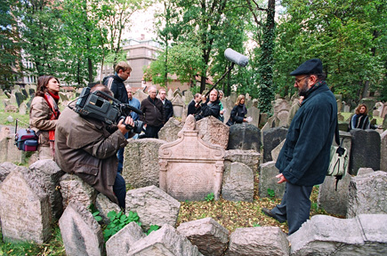

| HOUSE OF LIFE THE OLD JEWISH CEMETERY IN PRAGUE A FILM BY ALLAN MILLER AND MARK PODWAL USA, 2007, 52 min, in English Directed and Edited by: Allan Miller Produced by: Allan Miller and Mark Podwal Written by: Mark Podwal Narrated by: Claire Bloom Associate Producers: Natasa Dudinski and Marie Winn Director of Photography: Petr Pesek Executive Producer: Mark Podwal This solemn yet joyous documentary tells the story of The Old Jewish Cemetery in Prague, the site of layer upon layer of buried members of the once-vibrant Jewish community of the ghetto. Two thirds of a million people from all over the world now visit the cemetery each year, and House of Life chronicles its history, which is rich in lore, mysticism, tradition and philosophy. Tales of great rabbis and philanthropists and the story of the giant golem, created from clay to protect the Jewish people, are narrated by Claire Bloom. The 12,000 stones on the surface of The Old Jewish Cemetery may be covering as many as 100,000 members of Prague’s historic Jewish community. Under the German occupation in World War II, the cemetery was the only place where Jewish children were allowed to play. Later, under the communists, lovers met there for trysts. Today the neighborhood that was formerly the ghetto is quite fashionable. The cemetery serves, as does the film, as a reminder of the indomitable spirit of a people determined to honor their past and preserve the lessons of history. |
 Photo: Karel Cudlin |